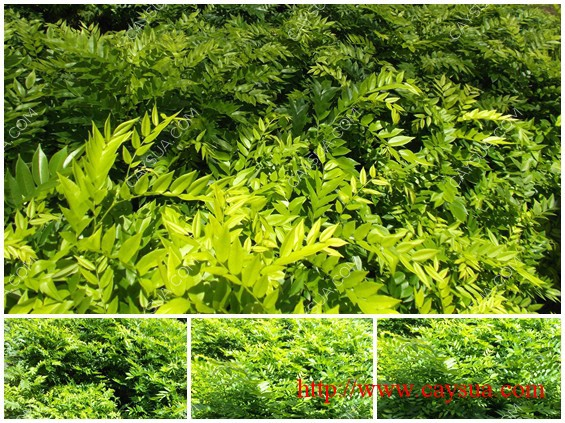

12 January / 7:30 AM
Kỹ thuật trồng – chăm sóc giống cây sưa đỏ
Đặc điểm cây sưa đỏ:
– Cây Sưa là cây gỗ lớn, ưa sáng, sinh trưởng trung bình nhưng ở tuổi 1 – 2 sinh trưởng rất nhanh; cây vươn dài tới 4-5m và uốn cong như cần câu, đến cuối tuổi 3 sang tuổi 4 cây tự vươn thẳng.
– Theo kinh nghiệm thì cây nào càng cong thì sinh trưởng càng mạnh.
– Cây sưa rất dẻo và dai, chống chịu bão gió rất tốt, cành sưa không bao giờ bị gẫy do gió bão, gốc sưa bị gió bão xô đổ nghiêng sau lại tự vươn thẳng được.
Kỹ thuật ủ mầm:
– Ngâm hạt vào nước ấm theo tỉ lệ 2 sôi 3 lạnh trong vòng 12 giờ sau đó vớt ra rổ cà nhẹ nhiều lần rồi đem ủ trong bọc vải ở nhiệt độ khoảng 35 độ.
– Sau khi ủ 48 giờ, hạt nứt nanh đem ra ươm riêng. Hạt nào nứt cho vào bầu, hạt nào chưa nứt ủ tiếp. Sau 12 giờ hạt nào không nứt thì loại bỏ.
Kỹ thuật vườn ươm:
Vườn ươm giống cây sưa đỏ – Nơi bán giống cây sưa đỏ
– Đảm bảo độ ẩm và ánh sáng cho cây non, bầu ươm đảm bảo đất tơi xốp và thoát nước. Không nên tưới nhiều nhưng tưới đều hàng ngày.
– Khi được 45 ngày cây con được 2-3 lá thì tăng cường ánh sáng kết hợp phân và dưỡng chất đa vi lượng.
– Khi cây đạt 15-20 Cm bắt đầu cho cây ra ánh nắng để cây quen dần với môi trường.
– Cây đạt chiều cao từ 25 – 50 – 100 – 150 cm đem trồng ra môi trường ngoài vườn ươm.
Biện pháp kỹ thuật trồng, chăm sóc giống cây sưa đỏ:
Cây sưa đỏ được nhân giống thành công tại CAYSUA.COM
Hạt sưa
Tiêu chuẩn cây con:
Cây con đem trồng phải từ 6-12 tháng tuổi.
Đường kính cổ rễ từ 4-5 mm, cao từ 25-50 cm là tốt nhất.
Cây khỏe mạnh, không sâu bệnh…
Khi mua về chưa thể trồng ngay nên tưới ẩm bầu hàng ngày và để nơi có ánh sáng mặt trời.
Quy trình kỹ thuật làm đất trồng cây gỗ sưa đỏ [nhóm IA]
Quy trình kỹ thuật làm đất:
– Làm đất: Trồng rải rác hay tập trung đều phải đào hố. Theo kinh nghiệm kích thước hố 50x50x50cm là phù hợp.
– Bón phân: Bón lót mỗi hố từ 1-3kg phân chuồng hoai mục, phân chuồng ủ vi sinh là tốt nhất.
Mật độ và khoảng cách trồng:
Trồng tập trung
– Cây cách cây 3m và hàng cách hàng 3m, 1 ha trồng 1.100 cây.
– Hoặc cây cách cây 2m, hàng cách hàng 3m, 1 ha trồng 1.660 cây.
Khoảng cách trồng cây gỗ sưa đỏ [cây cách cây 3 mét]
Khoảng cách trên chỉ có tính tương đối có thể tùy theo cách sử dụng đất để bố trí lại cho phù hợp.
Trồng hàng rào hoặc trồng rải rác, trồng làm cảnh cây cách cây 1.5 – 2 mét.
Trồng xen với các loại cây khác: Trồng làm cây che mát cafe, trồng làm trụ tiêu, hoặc trồng cây dược liệu, cây ngắn ngày…
Khoảng cách trồng cây gỗ sưa đỏ làm cảnh hoặc làm hàng rào [cây cách cây 1.5 – 2 mét]
Trồng theo sở thích riêng hoặc điều kiện ngoại cảnh
– Khi trồng nhẹ nhàng dùng tay xé bao nilon bầu đất, tránh làm vỡ bầu đất, sau đó đặt xuống hố đã đào sẵng.
– Khi trồng đảm bảo mặt bầu dưới mặt đất 5 – 10 cm.
– Tưới nước ẩm cho hố đất đó để cây có thể bén rễ tốt.
Kỹ thuật chăm sóc cây sưa non:
Chăm sóc
– Sau khi trồng tưới ẩm đều trong 30 ngày cho cây bén rễ hồi xanh. Trồng rừng tập trung nên trồng vào đầu mùa mưa, tiết kiệm chi phí nhân công tưới nước. Trồng ít trong vườn nhà hoặc trồng nơi có thể chủ động được nước tưới ta có thể trồng quanh năm, không cần theo mùa vụ.
Tưới nước
– Tưới nước đều ẩm trong 1 – 2 tháng đầu. Sau đó giảm lượng tưới nước, nhưng nếu gặp thời tiết khắc nghiệt, thấy cây có hiện tượng thiếu nước phải kịp thời bổ xung tránh để cây bị hư hại, giảm sức sống.
– Sau khi trồng 1 tháng, cây phát triển bình thường có thể bón các loại phân hóa học để kích thích sự phát triển của cây, Lưu ý chỉ nên bón 1 lượng rất nhỏ (Khoảng 1 thìa cà phê) cách gốc từ 5 cm.
– Trong 3 năm đầu, mỗi năm làm cỏ bón phân 2 – 3 lần. Bón mỗi cây 0,1 – 0,2kg NPK (12:5:10).
Chăm sóc và bón phân cân đối và thường xuyên sẽ rút ngắn thời gian cho thu hoạch
– Những năm sau làm cỏ 1-2 lần/năm. Bón mỗi cây tăng 0,1-0,2kg NPK/mỗi tuổi.
– Cây Sưa đỏ muốn rút ngắn chu kỳ kinh doanh mà cây đạt được gỗ thương phẩm thì phải thường xuyên chăm sóc.
– Trong thời gian 3 năm đầu làm cỏ quanh gốc đảm bảo cây không bị cỏ dại chen lấn tạo nguồn quang hợp cho cây.
– Nên tỉa cành vào cuối mùa khô hàng năm để tạo cho thân cây thẳng. Sau trồng 2 – 3 năm tỉa bỏ cành la, cành võng. Sau trồng 5 – 6 năm tỉa bỏ cành giao nhau.
– Từ khi cây phát triển bình thường có thể bón phân hoặc không cũng được vì sức phát triển của Sưa đỏ mạnh hơn rất nhiều các loại cây gỗ cùng nhóm và cho thu hoạch sớm hơn rất nhiều.
– Sâu hại: Ít thấy loại sâu ăn lá Sưa. các loài sâu bọ, côn trùng, không thích ăn lá sưa, có một số sâu bọ ăn tạp không bỏ qua cây sưa. Sâu, Bọ, bệnh hại cây sưa còn tùy theo khu vực, có nơi có loài này, có nơi có loài khác… Xem thêm cách phòng trừ sâu bệnh.
Thời vụ trồng cây sưa:
Khu vực miền Bắc: Khoảng từ tháng 2 – tháng 4.
Khu vực Bắc Trung Bộ: Từ tháng 9 – tháng 11.
Khu vực Duyên hải Miền Trung: Từ tháng 11 – tháng 1.
Khu vực Tây Nguyên và Đông Nam Bộ: Từ tháng 6 – tháng 9.
Tuổi thành thục công nghiệp (cây thương phẩm):
– Giá trị đích thực cây Sưa đỏ hiện nay chỉ có người buôn gỗ Sưa mới biết được. Thị trường tiêu thụ là xuất khẩu thô hoặc làm đồ thủ công mỹ nghệ đắt tiền.
– Cây Sưa trồng 10 năm, sinh trưởng trung bình có đường kính trung bình 25cm, cao 13m. Như vậy tuổi thành thục cây Sưa từ trên dưới 10 năm trở lên.
– Hiện tại người ta lùng mua đồ gia dụng làm bằng gỗ Sưa như đi mua đồ cổ: Giường, tủ, bàn ghế cũ với giá cao tùy theo tốt xấu.
Trồng xen
Khả năng trồng xen là khả năng lớn nhất của cây Sưa.

Cây sưa đỏ trồng xen với nhiều loại cây trồng [cây công nghiệp, cây ăn quả, cây cảnh, cây thuốc…]
– Cây Sưa phát triển tốt dưới tán vải, keo, bạch đàn… nên không cần chặt bỏ cây trồng hiện tại, có thể trồng cây Sưa hỗn giao với keo tai tượng, cây dược liệu…
– Cây Sưa ít tán nên không cạnh tranh ánh sáng với cây trồng.
– Không cạnh tranh chất dinh dưỡng của các cây khác. Không cần phải có rừng bạn mới trồng cây lâm nghiệp được, bạn có thể tận dụng mọi nơi có đất trống để trồng.
– Trong thời gian chờ thu hoạch, trồng cây bất kỳ xen dưới gốc, ví dụ hồ tiêu, sa nhân… cho thu nhập hàng năm.
– Trồng làm hàng rào, cây cách cây 1.5 – 3 mét.
– Trồng làm cây cảnh, vừa đẹp vừa có thu nhập.
Author: CAYSUA.COM
Tags